FedData version 3.0 is about to be released to CRAN. There are several breaking changes in the FedData API from version 2.x. Please see
NEWS.md
for a list of changes.
FedData is an R package implementing functions to automate downloading geospatial data available from several federated data sources.
Currently, the package enables extraction from seven datasets:
- The National Elevation Dataset (NED) digital elevation models (1, 1/3, and 1/9 arc-second; USGS)
- The National Hydrography Dataset (NHD) (USGS)
- The Soil Survey Geographic (SSURGO) database from the National Cooperative Soil Survey (NCSS), which is led by the Natural Resources Conservation Service (NRCS) under the USDA
- The Global Historical Climatology Network (GHCN), coordinated by National Climatic Data Center at NOAA
- The Daymet gridded estimates of daily weather parameters for North America, version 3, available from the Oak Ridge National Laboratory’s Distributed Active Archive Center (DAAC)
- The International Tree Ring Data Bank (ITRDB), coordinated by National Climatic Data Center at NOAA
- The National Land Cover Database (NLCD)
- The NASS Cropland Data Layer from the National Agricultural Statistics Service
This package is designed with the large-scale geographic information system (GIS) use-case in mind: cases where the use of dynamic web-services is impractical due to the scale (spatial and/or temporal) of analysis. It functions primarily as a means of downloading tiled or otherwise spatially-defined datasets; additionally, it can preprocess those datasets by extracting data within an area of interest (AoI), defined spatially. It relies heavily on the sp, raster, and rgdal packages.
This package has been built and tested on a source (Homebrew) install of R on macOS 11.4 (Big Sur), and has been successfully run on Ubuntu 14.04.5 LTS (Trusty), Ubuntu 16.04.1 LTS (Xenial) and binary installs of R on Mac OS 11.4 and Windows 10.
Development
- Kyle Bocinsky - Montana Climate Office, Missoula, MT
Contributors
- Dylan Beaudette - USDA-NRCS Soil Survey Office, Sonora, CA
- Scott Chamberlain - ROpenSci and Museum of Paleontology at UC Berkeley
Install FedData
- From CRAN:
install.packages("FedData")- Development version from GitHub:
install.packages("devtools")
devtools::install_github("ropensci/FedData")- Linux (Ubuntu 14.04.5 or 16.04.1):
First, in terminal:
sudo add-apt-repository ppa:ubuntugis/ppa -y
sudo apt-get update -q
sudo apt-get install libssl-dev libcurl4-openssl-dev netcdf-bin libnetcdf-dev gdal-bin libgdal-devThen, in R:
update.packages("survival")
install.packages("devtools")
devtools::install_github("ropensci/FedData")Demonstration
This demonstration script is available as an R Markdown document in the GitHub repository: https://github.com/ropensci/FedData.
Get and plot the National Elevation Dataset for the study area
# Get the NED (USA ONLY)
# Returns a raster
NED <- get_ned(
template = FedData::meve,
label = "meve"
)
#> Warning in showSRID(uprojargs, format = "PROJ", multiline = "NO", prefer_proj =
#> prefer_proj): Discarded ellps WGS 84 in Proj4 definition: +proj=merc +a=6378137
#> +b=6378137 +lat_ts=0 +lon_0=0 +x_0=0 +y_0=0 +k=1 +units=m +nadgrids=@null
#> +wktext +no_defs +type=crs
#> Warning in showSRID(uprojargs, format = "PROJ", multiline = "NO", prefer_proj =
#> prefer_proj): Discarded datum World Geodetic System 1984 in Proj4 definition
#> Warning in showSRID(uprojargs, format = "PROJ", multiline = "NO", prefer_proj
#> = prefer_proj): Discarded datum Unknown based on WGS84 ellipsoid in Proj4
#> definition
# Plot with raster::plot
raster::plot(NED)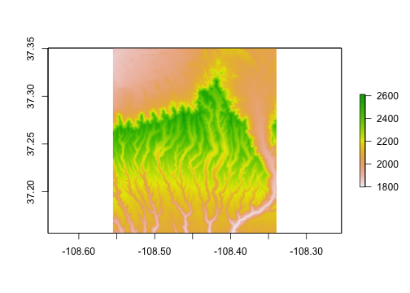
Get and plot the Daymet dataset for the study area
# Get the DAYMET (North America only)
# Returns a raster
DAYMET <- get_daymet(
template = FedData::meve,
label = "meve",
elements = c("prcp", "tmax"),
years = 1980:1985
)
# Plot with raster::plot
raster::plot(DAYMET$tmax$X1985.10.23)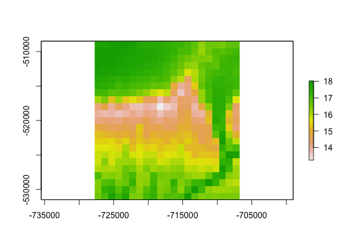
Get and plot the daily GHCN precipitation data for the study area
# Get the daily GHCN data (GLOBAL)
# Returns a list: the first element is the spatial locations of stations,
# and the second is a list of the stations and their daily data
GHCN.prcp <- get_ghcn_daily(
template = FedData::meve,
label = "meve",
elements = c("prcp")
)
#> Warning in if (!is.null(template) & !(class(template) %in%
#> c("SpatialPolygonsDataFrame", : the condition has length > 1 and only the first
#> element will be used
#> Warning in showSRID(uprojargs, format = "PROJ", multiline = "NO", prefer_proj =
#> prefer_proj): Discarded ellps WGS 84 in Proj4 definition: +proj=merc +a=6378137
#> +b=6378137 +lat_ts=0 +lon_0=0 +x_0=0 +y_0=0 +k=1 +units=m +nadgrids=@null
#> +wktext +no_defs +type=crs
#> Warning in showSRID(uprojargs, format = "PROJ", multiline = "NO", prefer_proj =
#> prefer_proj): Discarded datum World Geodetic System 1984 in Proj4 definition
#> Warning: `select_()` was deprecated in dplyr 0.7.0.
#> Please use `select()` instead.
#> Warning: `filter_()` was deprecated in dplyr 0.7.0.
#> Please use `filter()` instead.
#> See vignette('programming') for more help
#> Warning: `funs_()` was deprecated in dplyr 0.7.0.
#> Please use `funs()` instead.
#> See vignette('programming') for more help
#> Warning: `funs()` was deprecated in dplyr 0.8.0.
#> Please use a list of either functions or lambdas:
#>
#> # Simple named list:
#> list(mean = mean, median = median)
#>
#> # Auto named with `tibble::lst()`:
#> tibble::lst(mean, median)
#>
#> # Using lambdas
#> list(~ mean(., trim = .2), ~ median(., na.rm = TRUE))
# Plot the NED again
raster::plot(NED)
# Plot the spatial locations
sp::plot(GHCN.prcp$spatial,
pch = 1,
add = TRUE
)
legend("bottomleft",
pch = 1,
legend = "GHCN Precipitation Records"
)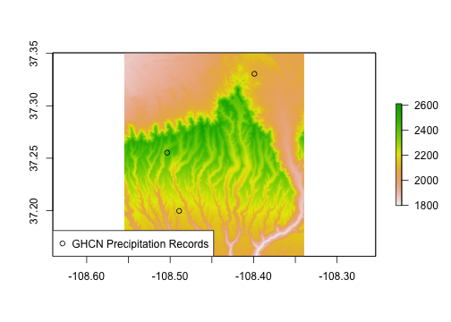
Get and plot the daily GHCN temperature data for the study area
# Elements for which you require the same data
# (i.e., minimum and maximum temperature for the same days)
# can be standardized using standardize==T
GHCN.temp <- get_ghcn_daily(
template = FedData::meve,
label = "meve",
elements = c("tmin", "tmax"),
years = 1980:1985,
standardize = TRUE
)
#> Warning: `arrange_()` was deprecated in dplyr 0.7.0.
#> Please use `arrange()` instead.
#> See vignette('programming') for more help
# Plot the NED again
raster::plot(NED)
# Plot the spatial locations
sp::plot(GHCN.temp$spatial,
add = TRUE,
pch = 1
)
legend("bottomleft",
pch = 1,
legend = "GHCN Temperature Records"
)Get and plot the National Hydrography Dataset for the study area
# Get the NHD (USA ONLY)
get_nhd(
template = FedData::meve,
label = "meve"
) %>%
plot_nhd(template = FedData::meve)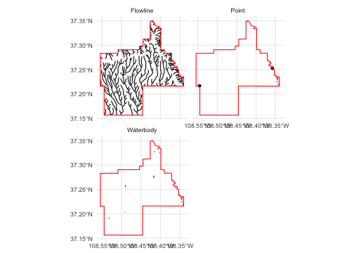
Get and plot the NRCS SSURGO data for the study area
# Get the NRCS SSURGO data (USA ONLY)
SSURGO.MEVE <- get_ssurgo(
template = FedData::meve,
label = "meve"
)
# Plot the NED again
raster::plot(NED)
# Plot the SSURGO mapunit polygons
plot(SSURGO.MEVE$spatial$geom,
lwd = 0.1,
add = TRUE
)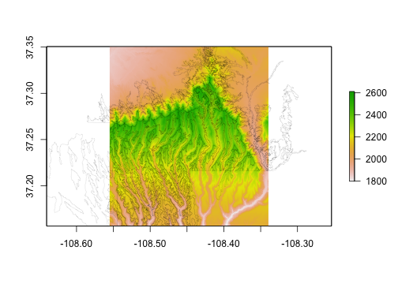
Get and plot the NRCS SSURGO data for particular soil survey areas
# Or, download by Soil Survey Area names
SSURGO.areas <- get_ssurgo(
template = c("CO670", "CO075"),
label = "CO_TEST"
)
# Let's just look at spatial data for CO675
SSURGO.areas.CO675 <-
SSURGO.areas$spatial %>%
dplyr::filter(AREASYMBOL == "CO075")
# And get the NED data under them for pretty plotting
NED.CO675 <- get_ned(
template = SSURGO.areas.CO675,
label = "SSURGO_CO675"
)
#> Warning in showSRID(uprojargs, format = "PROJ", multiline = "NO", prefer_proj
#> = prefer_proj): Discarded datum Unknown based on WGS84 ellipsoid in Proj4
#> definition
# Plot the SSURGO mapunit polygons, but only for CO675
raster::plot(NED.CO675)
plot(SSURGO.areas.CO675$geom,
lwd = 0.1,
add = TRUE
)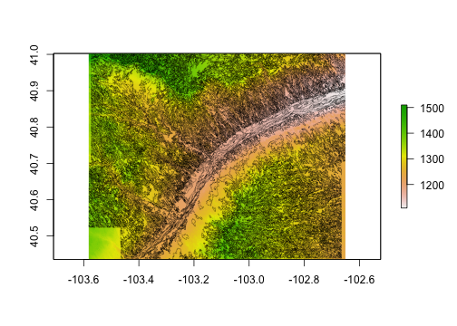
Get and plot the ITRDB chronology locations in the study area
# Get the ITRDB records
# Buffer MEVE, because there aren't any chronologies in the Park
ITRDB <- get_itrdb(
template = FedData::meve %>%
sf::st_buffer(50000),
label = "meve",
measurement.type = "Ring Width",
chronology.type = "Standard"
)
#> Warning in eval(jsub, SDenv, parent.frame()): NAs introduced by coercion
#> Warning: attribute variables are assumed to be spatially constant throughout all
#> geometries
# Plot the MEVE buffer
plot(
FedData::meve %>%
sf::st_buffer(50000) %>%
sf::st_transform(4326)
)
# Map the locations of the tree ring chronologies
plot(ITRDB$metadata$geometry,
pch = 1,
add = TRUE
)
legend("bottomleft",
pch = 1,
legend = "ITRDB chronologies"
)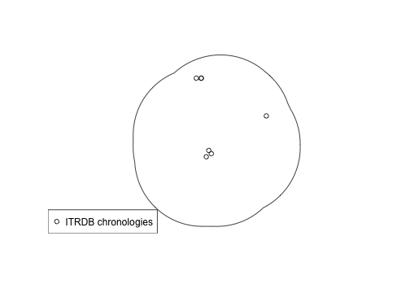
Get and plot the National Land Cover Dataset for the study area
# Get the NLCD (USA ONLY)
# Returns a raster
NLCD <- get_nlcd(
template = FedData::meve,
year = 2016,
dataset = "Land_Cover",
label = "meve"
)
# Plot with raster::plot
raster::plot(NLCD, legend = TRUE)
#> Warning in plot.window(...): "legend" is not a graphical parameter
#> Warning in plot.xy(xy, type, ...): "legend" is not a graphical parameter
#> Warning in title(...): "legend" is not a graphical parameter
#> Warning in graphics::rasterImage(z, bb[1], bb[3], bb[2], bb[4], interpolate =
#> interpolate, : "legend" is not a graphical parameter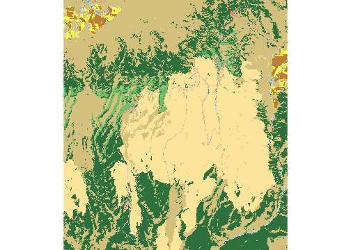
# You can also download the Canopy (2011 and 2016) or impervious (2001, 2006, 2011, and 2016) datasets:
NLCD_canopy <-
get_nlcd(
template = FedData::meve,
year = 2016,
dataset = "Tree_Canopy",
label = "meve"
)
# Plot with raster::plot
raster::plot(NLCD_canopy)
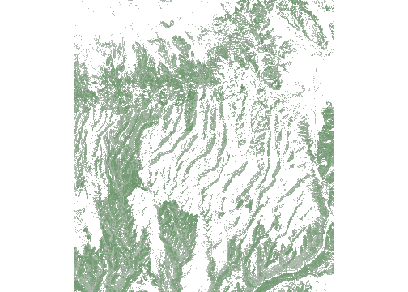
NLCD_impervious <- get_nlcd(
template = FedData::meve,
year = 2016,
dataset = "Impervious",
label = "meve"
)
# Plot with raster::plot
raster::plot(NLCD_impervious)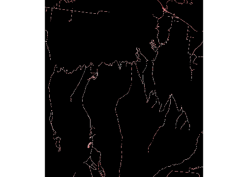
Get and plot the NASS Cropland Data Layer for the study area
# Get the NASS (USA ONLY)
# Returns a raster
NASS_CDL <- get_nass_cdl(
template = FedData::meve,
year = 2016,
label = "meve"
)
# Plot with raster::plot
raster::plot(NASS_CDL)
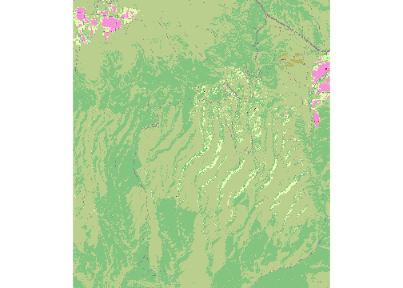
# Get the NASS CDL classification table
raster::levels(NASS_CDL)[[1]]
# Also, a convenience function loading the NASS CDL categories and hex colors
cdl_colors()Acknowledgements
This package is a product of SKOPE (Synthesizing Knowledge of Past Environments) and the Village Ecodynamics Project through grants awarded to the Crow Canyon Archaeological Center and Washington State University by the National Science Foundation. This software is licensed under the MIT license.
FedData was reviewed for rOpenSci by @jooolia, and was greatly improved as a result. rOpenSci on-boarding was coordinated by @sckott.